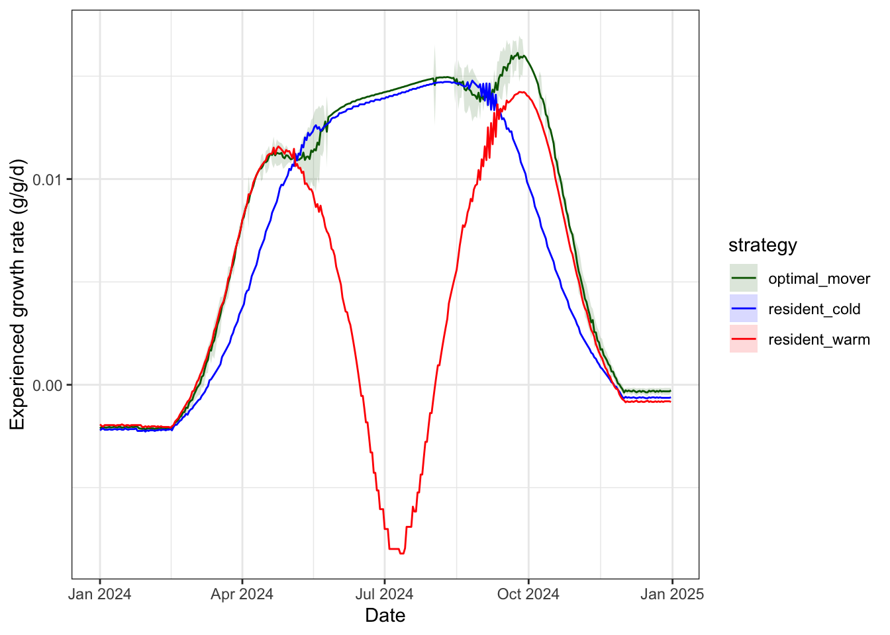

Code
load("data/wt.growth.array.RData")Purpose: construct an individual based model to simulate how fish move to track temperature-based growth opportunities across a habitat network, the resulting effects on growth, and the implications for long-term population dynamics.
Source dependencies
Load pre-calculated growth
load("data/wt.growth.array.RData")Configuration options
abiotic_only: fish can only sense temperature-dependent GP, regardless of which habitat is occupieddensity_current: fish sense density-dependent GP in current habitat, and compare to abiotic (temp-based) GP in the alternative habitatdensity_all: fish can sense density-dependent GP in all habitatsSenstive parameters:
Notes:
sense_environment == "density_all", the density used for the alternative patch is the current pre-movement density (i.e., what the fish can observe before anyone decides to move that day). This is the most tractable approximation — computing post-movement density would require solving a joint decision problem.move_threshold = Inf to formally unify all three strategies under one mechanism, rather than branching by strategy label — keeps the code cleaner if we expand to more strategies later.To do:
Three movement strategies are simulated: fish that remain year-round in the warm patch (resident_warm), fish that remain year-round in the cold patch (resident_cold), and fish that choose the better-growing patch each day (optimal_mover). Ration sizes match the unequal-ration scenario above.
Configuration notes:
Misc. objects
waterTemps <- cbind("pid" = seq(1, length(seq(0.1, 25, 0.1))),"WT" = seq(0.1, 25, 0.1))
rations <- seq(0.02, 0.17, 0.001)
weights <- seq(1, 1500, 1)Configure and initialize fish
# Configuration options:
move_stochastic <- "prob" # individual movement stochasticity: options = "none", "prob", "indiv"
food_densdepen <- "hyperbolic" # density dependence: options = "fullerton", "hyperbolic
sense_environment <- "density_current" # how omniscient are fish to temperature and density-dependent growth across the habitat patches?
# - "abiotic_only" = Omniscient to abiotic (temp-based) GP only...this is how it currently is.
# - "density_current" = Sense density dependent GP in current habitat, and compare to abiotic GP in the alternative habitat (perhaps the most biologically realistic)
# - "density_all" = Omniscient to density dependent GP in all habitats
# misc. parameters
n_fish_per_strat <- 50 # fish per strategy
start_wt <- 10 # initial weight (g)
MaxDensity4Growth <- 50 # growth is not depressed further above this density (currently this is arbitary)
movecost_c <- 0.025 # movement cost allometric function: `c` = scaling constant; `
movecost_b <- 0.6 # movement cost allometric function `a` = decay exponent (higher = steeper drop-off)
sigma_bold <- 0.002 # SD of boldness distribution, for dispersal propensity (g/g/d units)
tau <- 0.001 # sensitivity to growth difference (for probabilistic/softmax variation in movement)
K_warm <- K_cold <- 500 # For hyperbolic reduction, strength of density dependence/half-saturation density: fish density at which ration is halved
# Fullerton has movement cost coded slightly differently, where movement cost is a function of the instantaneous growth rate, distance moved, and a constant...rather than simply a fixed cost as is the case here. But because we only have two patches that are spatially implicit, we can ignore this more complex parameterization...at least for now.
# ration_warm = 0.10, ration_cold = 0.07 (defined in "Unequal ration" section above)
# Lookup sequences — identical to the axes of the wt.growth array
wt_seq_ibm <- waterTemps[, "WT"] # seq(0.1, 25, 0.1), 250 values
ra_seq_ibm <- rations # seq(0.02, 0.17, 0.001), 151 values
# Pre-compute ration indices (constant throughout simulation)
# ra_idx_warm <- which.min(abs(ra_seq_ibm - ration_warm))
# ra_idx_cold <- which.min(abs(ra_seq_ibm - ration_cold))
# set.seed(7843)
# initialize fish
fish_pop <- bind_rows(
tibble(strategy = "resident_warm", patch = "warm",
weight = pmax(1, rnorm(n_fish_per_strat, start_wt, 0))),
tibble(strategy = "resident_cold", patch = "cold",
weight = pmax(1, rnorm(n_fish_per_strat, start_wt, 0))),
tibble(strategy = "optimal_mover", patch = "warm",
weight = pmax(1, rnorm(n_fish_per_strat, start_wt, 0)))) %>%
mutate(pid = row_number(),
ration = if_else(patch == "warm", ration_warm, ration_cold),
# Individual movement threshold — drawn once, fixed for life
# Positive = reluctant to move (needs a clear advantage)
# Negative = bold/prone to move (moves even when slightly disadvantaged)
move_threshold = c(rep(Inf, n_fish_per_strat*2), # residents never move
rnorm(n_fish_per_strat, mean = 0, sd = sigma_bold)),
prob_surv = 1, survive = 1) %>%
group_by(patch) %>% mutate(density = n()) %>% ungroup()
fish_pop# A tibble: 150 × 9
strategy patch weight pid ration move_threshold prob_surv survive density
<chr> <chr> <dbl> <int> <dbl> <dbl> <dbl> <dbl> <int>
1 resident_… warm 10 1 0.1 Inf 1 1 100
2 resident_… warm 10 2 0.1 Inf 1 1 100
3 resident_… warm 10 3 0.1 Inf 1 1 100
4 resident_… warm 10 4 0.1 Inf 1 1 100
5 resident_… warm 10 5 0.1 Inf 1 1 100
6 resident_… warm 10 6 0.1 Inf 1 1 100
7 resident_… warm 10 7 0.1 Inf 1 1 100
8 resident_… warm 10 8 0.1 Inf 1 1 100
9 resident_… warm 10 9 0.1 Inf 1 1 100
10 resident_… warm 10 10 0.1 Inf 1 1 100
# ℹ 140 more rowsFor each day of year, optimal movers compare the bioenergetics growth rate at both patches — the vectorised equivalent of calling fncGrowthPossible() for each fish — and switch only when the movement-cost-penalised gain in the alternative patch exceeds staying (but this may differ among individuals depending on how movement stochasticity is configured). Warm and cold patch residents stay in their pre-defined patch. fncGrowthFish() then looks up the actual growth rate for every fish at their current patch, weight, and ration, and weights are updated accordingly.
n_days <- nrow(habitat_df) # number of days in the simulation
n_fish <- nrow(fish_pop) # number of fish in the simulation
fish_pop_init <- fish_pop # snapshot of full population before any mortality
# Pre-allocate storage (rows = fish pid, columns = days)
# Rows are indexed by fish pid (1:n_fish), which is stable even as fish die.
# Dead fish slots remain NA for all days after death.
ggd_matrix <- matrix(NA_real_, nrow = n_fish, ncol = n_days) # standardized growth rates experienced
gd_matrix <- matrix(NA_real_, nrow = n_fish, ncol = n_days) # absolute growth rates
temp_matrix <- matrix(NA_real_, nrow = n_fish, ncol = n_days) # water temps experienced
patch_matrix <- matrix(NA_character_, nrow = n_fish, ncol = n_days) # patch occupied
mass_matrix <- matrix(NA_real_, nrow = n_fish, ncol = n_days) # weight/mass trajectories
surv_matrix <- matrix(NA_integer_, nrow = n_fish, ncol = n_days) # survived (1) or died (0) each day
switches <- integer(n_fish) # count patch switches per fish (indexed by pid)
for (d in 1:n_days) {
t <- habitat_df$doy[d] # day of year
# 1. GET/FIND PATCH TEMPERATURE AND RATION -----------------------------------------------------
# Temperature indices for this day — shared by all fish
T_warm <- get_patchtemp(t, "warm") # get warm patch temp on day t
T_cold <- get_patchtemp(t, "cold") # get cold patch temp on day t
wt_idx_warm <- which.min(abs(wt_seq_ibm - T_warm)) # water temp index for warm patch on day t
wt_idx_cold <- which.min(abs(wt_seq_ibm - T_cold)) # water temp index for cold patch on day t
# Ration indices for this day - shared by all fish
R_warm <- get_patchration(t, "warm")
R_cold <- get_patchration(t, "cold")
ra_idx_warm <- which.min(abs(ra_seq_ibm - R_warm)) # ration index for warm patch on day t
ra_idx_cold <- which.min(abs(ra_seq_ibm - R_cold)) # ration index for cold patch on day t
# 2. CHOOSE PATCH: OPTIMAL MOVERS ---------------------------------------------------------------
# Mirrors fncGrowthPossible() logic, vectorized across all movers at once.
# Patch choice senses baseline temperature and ration, but not density
mover_rows <- which(fish_pop$strategy == "optimal_mover") # get row indices for optimal movers
if (length(mover_rows) > 0) {
# Mass indices for each mover (clamped to array bounds)
ma_idx_vec <- pmax(1L, pmin(4500L, round(fish_pop$weight[mover_rows]))) # get row index for current mass
## 2.A.
in_warm <- fish_pop$patch[mover_rows] == "warm" # is the fish in warm patch? T/F
move_cost_vec <- fncMoveCost_allometric(fish_pop$weight[mover_rows], c = movecost_c, b = movecost_b) # calculate size-dependent cost of movement
if (sense_environment == "abiotic_only") {
### 2.A.1. Individuals sense only temperature-based growth potential across all habitats
g_warm_vec <- wt.growth[wt_idx_warm, ra_idx_warm, ma_idx_vec]
g_cold_vec <- wt.growth[wt_idx_cold, ra_idx_cold, ma_idx_vec]
g_stay <- ifelse(in_warm, g_warm_vec, g_cold_vec) # growth if staying in current patch
g_move_net <- ifelse(in_warm, g_cold_vec - move_cost_vec, g_warm_vec - move_cost_vec) # growth if moving to alternate patch
} else if (sense_environment == "density_current") {
### 2.A.2. Individuals sense density-dependent GP in current habitat, abiotic GP in alternative habitat
# Density-adjusted ration indices for each patch (hyperbolic: R * K / (K + N))
n_warm <- sum(fish_pop$patch == "warm")
n_cold <- sum(fish_pop$patch == "cold")
ra_idx_warm_dd <- which.min(abs(ra_seq_ibm - round(R_warm * K_warm / (K_warm + n_warm), 2)))
ra_idx_cold_dd <- which.min(abs(ra_seq_ibm - round(R_cold * K_cold / (K_cold + n_cold), 2)))
# Warm fish sense dd-adjusted warm / abiotic cold; cold fish sense abiotic warm / dd-adjusted cold
g_warm_vec <- ifelse(in_warm,
wt.growth[wt_idx_warm, ra_idx_warm_dd, ma_idx_vec],
wt.growth[wt_idx_warm, ra_idx_warm, ma_idx_vec])
g_cold_vec <- ifelse(in_warm,
wt.growth[wt_idx_cold, ra_idx_cold, ma_idx_vec],
wt.growth[wt_idx_cold, ra_idx_cold_dd, ma_idx_vec])
g_stay <- ifelse(in_warm, g_warm_vec, g_cold_vec)
g_move_net <- ifelse(in_warm, g_cold_vec - move_cost_vec, g_warm_vec - move_cost_vec)
} else if (sense_environment == "density_all") {
### 2.A.3. Individuals sense density-dependent GP across all habitats
# Density-adjusted ration indices for each patch (hyperbolic: R * K / (K + N))
n_warm <- sum(fish_pop$patch == "warm")
n_cold <- sum(fish_pop$patch == "cold")
ra_idx_warm_dd <- which.min(abs(ra_seq_ibm - round(R_warm * K_warm / (K_warm + n_warm), 2)))
ra_idx_cold_dd <- which.min(abs(ra_seq_ibm - round(R_cold * K_cold / (K_cold + n_cold), 2)))
# Both patches sensed with density-adjusted ration
g_warm_vec <- wt.growth[wt_idx_warm, ra_idx_warm_dd, ma_idx_vec]
g_cold_vec <- wt.growth[wt_idx_cold, ra_idx_cold_dd, ma_idx_vec]
g_stay <- ifelse(in_warm, g_warm_vec, g_cold_vec)
g_move_net <- ifelse(in_warm, g_cold_vec - move_cost_vec, g_warm_vec - move_cost_vec)
}
prev_patch <- fish_pop$patch[mover_rows]
## 2.B. Impose stochasticity in movement
if (move_stochastic == "none") {
### 2.B.1. Deterministic: All movers do the same thing
# Update patch based on whether moving is beneficial.
# 1. If fish in is warm patch and growth potential of moving exceeds growth potential of staying, move to cold.
# 2. If fish in is cold patch and growth potential of moving exceeds growth potential of staying, move to warm.
fish_pop$patch[mover_rows] <- case_when(
in_warm & g_move_net > g_stay ~ "cold",
!in_warm & g_move_net > g_stay ~ "warm",
TRUE ~ fish_pop$patch[mover_rows]
)
} else if (move_stochastic == "prob") {
### 2.B.2. Probabilistic (softmax) rule: Instead of a hard threshold, fish switch with a probability that increases with the growth advantage. One parameter: τ (sensitivity; small = nearly deterministic, large = nearly random).
p_warm <- fncMoveSoftmax(gwarm = g_warm_vec, gcold = g_cold_vec, tau = 0.001) # calculate probability of selecting warm habitat
choose_warm <- runif(length(mover_rows)) < p_warm # choose warm if p_warm exceeds a random number between 0 and 1
fish_pop$patch[mover_rows] <- if_else(choose_warm, "warm", "cold") # update patch
} else if (move_stochastic == "indiv") {
### 2.B.3. Individual-level movement threshold: each fish has a unique threshold for movement, representing individual variation in boldness/dispersal propensity
fish_pop$patch[mover_rows] <- case_when(
in_warm & (g_move_net - g_stay) > fish_pop$move_threshold[mover_rows] ~ "cold",
!in_warm & (g_move_net - g_stay) > fish_pop$move_threshold[mover_rows] ~ "warm",
TRUE ~ prev_patch) #fish_pop$patch[mover_rows])
}
# Tally switches (indexed by pid so counts remain correct as fish die)
switched <- fish_pop$patch[mover_rows] != prev_patch
switches[fish_pop$pid[mover_rows]] <- switches[fish_pop$pid[mover_rows]] + as.integer(switched)
} # end patch choice
# Update ration to reflect current patch
fish_pop$ration <- if_else(fish_pop$patch == "warm", R_warm, R_cold)
# 3. UPDATE HABITAT QUALITY (DENSITY-DEPENDENT RATION) -----------------------------------------
# Update density after fish have moved
fish_pop <- fish_pop %>% group_by(patch) %>% mutate(density = n()) %>% ungroup()
if (food_densdepen == "fullerton") {
### 3a. Fullerton approach
# get density effect on ration
fdens <- fdens_raw <- fish_pop$density # get fish "density" per patch (here, simply abundance b/c space is not specified)
fdens[fdens > MaxDensity4Growth] <- MaxDensity4Growth # high densities cap out at MaxDensity4Growth
density.effect <- fncRescale((1 - c(fdens, 0.01, MaxDensity4Growth)), c((0.5),1)) # calculate density effect scalar
density.effect <- density.effect[-c(length(density.effect), (length(density.effect) - 1))] # remove the last 2 temporary values
# update ration in patches to account for density dependence in food availability
fish_pop <- fish_pop %>% mutate(ration = ration * density.effect)
} else if (food_densdepen == "hyperbolic") {
### 3b. Hyperbolic reduction approach
fish_pop <- fncDensityRation(fish_pop = fish_pop, R_warm = R_warm, R_cold = R_cold, k_warm = K_warm, k_cold = K_cold)
}
# 4. GROW FISH (WISCONSIN BIOENERGETICS) -------------------------------------------------------
# Growth lookup for all fish via fncGrowthFish. Growth in g/g/d
growth_df <- fncGrowthFish(NA, as.data.frame(fish_pop), t)
# 5. SURVIVAL BASED ON FISH WEIGHT AND GROWTH --------------------------------------------------
surv.list <- fncSurvive(growth_df)
growth_df <- growth_df %>%
mutate(prob_surv = surv.list[[1]],
survive = surv.list[[2]])
# 6. STORE RESULTS AND REMOVE NON-SURVIVORS ----------------------------------------------------
# Store experienced rates before weight update.
# All indexing uses fish pid (rows 1:n_fish) so slots remain stable as fish die.
temp_matrix[fish_pop$pid, d] <- growth_df$WT.actual
ggd_matrix[fish_pop$pid, d] <- growth_df$growth
gd_matrix[fish_pop$pid, d] <- growth_df$growth * fish_pop$weight
# Update weight: W_{t+1} = W_t + (growth_rate * W_t)
fish_pop$weight <- fish_pop$weight + (growth_df$growth * fish_pop$weight)
# Store updated weight, patch, and survival outcome for this day
mass_matrix[fish_pop$pid, d] <- fish_pop$weight
patch_matrix[fish_pop$pid, d] <- fish_pop$patch
surv_matrix[fish_pop$pid, d] <- growth_df$survive
# Remove non-survivors — only living fish carry forward to next iteration
fish_pop <- fish_pop[growth_df$survive == 1, ]
}Summarize results
# assign DOY column names
colnames(mass_matrix) <- as.character(habitat_df$doy)
colnames(patch_matrix) <- as.character(habitat_df$doy)
colnames(temp_matrix) <- as.character(habitat_df$doy)
colnames(ggd_matrix) <- as.character(habitat_df$doy)
# Convert weight matrix to long format, join with patch matrix
# Use fish_pop_init to label rows — fish_pop at this point only contains survivors
mass_long <- as_tibble(mass_matrix) %>%
bind_cols(fish_pop_init %>% select(pid, strategy)) %>%
pivot_longer(-c(pid, strategy), names_to = "doy", values_to = "weight") %>%
mutate(doy = as.integer(doy)) %>%
left_join(
as_tibble(patch_matrix) %>%
bind_cols(fish_pop_init %>% select(pid)) %>%
pivot_longer(-pid, names_to = "doy", values_to = "patch") %>%
mutate(doy = as.integer(doy)),
by = c("pid", "doy")
) %>%
left_join(habitat_df %>% select(doy, date), by = "doy")
# Convert temp matrix to long format
temp_long <- as_tibble(temp_matrix) %>%
bind_cols(fish_pop_init %>% select(pid, strategy)) %>%
pivot_longer(-c(pid, strategy), names_to = "doy", values_to = "temp") %>%
mutate(doy = as.integer(doy))
# convert standardized growth rate matrix to long format
ggd_long <- as_tibble(ggd_matrix) %>%
bind_cols(fish_pop_init %>% select(pid, strategy)) %>%
pivot_longer(-c(pid, strategy), names_to = "doy", values_to = "ggd") %>%
mutate(doy = as.integer(doy))
# convert survival matrix to long format (1 = survived, 0 = died, NA = already dead)
surv_long <- as_tibble(surv_matrix) %>%
bind_cols(fish_pop_init %>% select(pid, strategy)) %>%
pivot_longer(-c(pid, strategy), names_to = "doy", values_to = "survived") %>%
mutate(doy = as.integer(doy))
# summarize by strategy
ibm_summary <- mass_long %>%
left_join(temp_long, by = c("pid", "strategy", "doy")) %>%
left_join(ggd_long, by = c("pid", "strategy", "doy")) %>%
left_join(surv_long, by = c("pid", "strategy", "doy")) %>%
group_by(strategy, doy, date) %>%
summarise(
mean_weight = mean(weight, na.rm = TRUE),
sd_weight = sd(weight, na.rm = TRUE),
mean_temp = mean(temp, na.rm = TRUE),
sd_temp = sd(temp, na.rm = TRUE),
mean_ggd = mean(ggd, na.rm = TRUE),
sd_ggd = sd(ggd, na.rm = TRUE),
prop_warm = mean(patch == "warm", na.rm = TRUE),
n_alive = sum(!is.na(weight)), # fish with non-NA weight were alive this day
.groups = "drop"
)
ibm_summary# A tibble: 1,098 × 11
strategy doy date mean_weight sd_weight mean_temp sd_temp mean_ggd
<chr> <int> <date> <dbl> <dbl> <dbl> <dbl> <dbl>
1 optimal_mo… 1 2024-01-01 9.98 0.00137 0.364 0.0942 -0.00212
2 optimal_mo… 2 2024-01-02 9.96 0.00162 0.428 0.0970 -0.00205
3 optimal_mo… 3 2024-01-03 9.94 0.00168 0.444 0.0907 -0.00206
4 optimal_mo… 4 2024-01-04 9.92 0.00180 0.4 0.101 -0.00207
5 optimal_mo… 5 2024-01-05 9.90 0.00216 0.392 0.101 -0.00208
6 optimal_mo… 6 2024-01-06 9.88 0.00225 0.404 0.101 -0.00207
7 optimal_mo… 7 2024-01-07 9.86 0.00233 0.412 0.100 -0.00204
8 optimal_mo… 8 2024-01-08 9.84 0.00261 0.396 0.101 -0.00208
9 optimal_mo… 9 2024-01-09 9.82 0.00277 0.404 0.101 -0.00207
10 optimal_mo… 10 2024-01-10 9.80 0.00293 0.417 0.0996 -0.00204
# ℹ 1,088 more rows
# ℹ 3 more variables: sd_ggd <dbl>, prop_warm <dbl>, n_alive <int>Mean weight trajectories by strategy (ribbon = ±1 SD across individuals).
Uncertainty derives from variation in starting size (if allowed) and stochasticity in individual movement behavior (if configured).
ibm_summary %>%
ggplot(aes(x = date, color = strategy, fill = strategy)) +
geom_ribbon(aes(ymin = mean_weight - sd_weight, ymax = mean_weight + sd_weight),
alpha = 0.15, color = NA) +
geom_line(aes(y = mean_weight)) +
scale_color_manual(values = c(resident_warm = "red",
resident_cold = "blue",
optimal_mover = "darkgreen")) +
scale_fill_manual(values = c(resident_warm = "red",
resident_cold = "blue",
optimal_mover = "darkgreen")) +
theme_bw() + #ylim(0,10000) +
xlab("Date") + ylab("Mean weight ± SD (g)")
Show individual weight trajectories
mass_long %>%
ggplot(aes(x = date, y = weight, color = strategy, group = pid)) +
geom_line(alpha = 0.5) +
scale_color_manual(values = c(resident_warm = "red",
resident_cold = "blue",
optimal_mover = "darkgreen")) +
theme_bw() + #ylim(0,10000) +
xlab("Date") + ylab("Individual weight (g)")
Plot daily counts of survivors and overall survival by strategy (plots are the same, survival is standardized by number of initial fish per strategy)
p1 <- ibm_summary %>%
ggplot(aes(x = date, y = n_alive, color = strategy)) +
geom_line() +
scale_color_manual(values = c(resident_warm = "red",
resident_cold = "blue",
optimal_mover = "darkgreen")) +
scale_y_continuous(limits = c(0, NA)) +
labs(
x = "Date",
y = "Number alive",
color = "Strategy",
title = "Population size by strategy"
) +
theme_bw()
p2 <- ibm_summary %>%
ggplot(aes(x = date, y = n_alive / n_fish_per_strat, color = strategy)) +
geom_line() +
scale_color_manual(values = c(resident_warm = "red",
resident_cold = "blue",
optimal_mover = "darkgreen")) +
scale_y_continuous(limits = c(0, NA)) +
labs(
x = "Date",
y = "Proportion alive",
color = "Strategy",
title = "Cumulative survival by strategy"
) +
theme_bw()
ggpubr::ggarrange(p1, p2, common.legend = TRUE)
Summarize survival outcomes by strategy:
ibm_summary %>%
filter(doy == n_days) %>%
mutate(survive_rate = n_alive / n_fish_per_strat) %>%
select(strategy, n_alive, survive_rate)# A tibble: 3 × 3
strategy n_alive survive_rate
<chr> <int> <dbl>
1 optimal_mover 35 0.7
2 resident_cold 21 0.42
3 resident_warm 15 0.3 Interpretation below is based on past model runs with different parameterization/configuration. But what is consistent across runs is that (1) summer is a challenging time for survival in the warm habitat, (2) winter/spring is challenges survival in the cold habitat, and (3) movers always have the highest survival.
sense_environment appears to have a large effect on survival outcomes, but doesn’t change overall patterns described above.
resident_warm has the lowest overall survival, consistent with it being the poorest-growing strategy.
resident_warm mortality coincides with slower/negative growth in mid-summer, which is exactly what the function should be responding to.resident_cold has moderate overall survival (88%). Survival declines the early part of the year when growth is negative and fish are small. No mortality occurs during the summer, consistent with theory on the role of perennially cold habitat providing summer refugia.optimal_mover has the highest overall survival (~96%), reflecting its growth advantage keeping individual survival probabilities near 1.0 most of the year.Check whether mortality is concentrated among the smallest or slowest-growing individuals within each strategy — e.g., plot final weight of survivors vs. non-survivors — to confirm size-selective mortality is operating as expected.
n_days <- ncol(mass_matrix)
# Per-fish fate summary
fish_fate <- fish_pop_init %>%
mutate(
# Survived to end of year if final day weight is non-NA
survived = if_else(!is.na(mass_matrix[pid, n_days]), "Survived", "Died"),
# Last recorded weight (weight at death for non-survivors, final weight for survivors)
wt_last = apply(mass_matrix, 1, function(x) tail(x[!is.na(x)], 1)),
# Mean daily growth rate across all days alive
mean_ggd = rowMeans(ggd_matrix, na.rm = TRUE),
# Days alive
days_alive = rowSums(!is.na(mass_matrix))
)
fish_fate %>% count(strategy, survived)# A tibble: 6 × 3
strategy survived n
<chr> <chr> <int>
1 optimal_mover Died 15
2 optimal_mover Survived 35
3 resident_cold Died 29
4 resident_cold Survived 21
5 resident_warm Died 35
6 resident_warm Survived 15strategy_order <- c("resident_warm", "resident_cold", "optimal_mover")
fd <- fish_fate %>% mutate(strategy = factor(strategy, levels = strategy_order))
p_wt <- ggplot(fd, aes(x = survived, y = wt_last)) +
geom_boxplot(width = 0.5, outlier.shape = NA, fill = "grey") +
geom_jitter(width = 0.15, size = 1.5, alpha = 0.6) +
facet_wrap(~ strategy, nrow = 1) +
#scale_fill_manual(values = c(Died = "tomato", Survived = "steelblue")) +
labs(x = NULL, y = "Weight (g)",
title = "A: Weight at last observation") +
theme_bw() + theme(legend.position = "none")
p_ggd <- ggplot(fd, aes(x = survived, y = mean_ggd)) +
geom_boxplot(width = 0.5, outlier.shape = NA, fill = "grey") +
geom_jitter(width = 0.15, size = 1.5, alpha = 0.6) +
facet_wrap(~ strategy, nrow = 1) +
#scale_fill_manual(values = c(Died = "tomato", Survived = "steelblue")) +
labs(x = NULL, y = "Mean growth rate (g/g/d)",
title = "B: Mean daily growth rate across days alive") +
theme_bw() + theme(legend.position = "none")
p_days <- ggplot(fd |> filter(survived == "Died"),
aes(x = strategy, y = days_alive, color = strategy)) +
geom_jitter(width = 0.15, size = 2.5, alpha = 0.8) +
scale_x_discrete(limits = strategy_order) +
labs(x = NULL, y = "Day of death (day of year)",
title = "C: When did non-survivors die?") +
theme_bw() + theme(legend.position = "none") +
scale_color_manual(values = c(resident_warm = "red",
resident_cold = "blue",
optimal_mover = "darkgreen"))
egg::ggarrange(p_wt, p_ggd, p_days, ncol = 1)
Yes, overall, the mortality function in behaving correctly: it’s selecting against small, slow-growing fish in a biologically interpretable way.
optimal_mover (tiny died fish vs. large survivors) and resident_cold, and more compressed for resident_warm where all fish are similarly small.resident_cold and optimal_mover had negative mean growth rates — they were actively losing mass before dying, which is exactly what you’d expect the survival function to respond to. resident_warm non-survivors overlap more with survivors, which makes sense: when the whole strategy is slow-growing, survival probabilities don’t vary as much among individuals, so mortality there is more stochastic.resident_cold deaths cluster early (~day 55–70)…the smallest/slowest fish that can’t sustain themselves even in the cold patchresident_warm deaths spread through summer/fall as the warm patch becomes suboptimaloptimal_mover deaths also cluster early…a few unlucky fishPatch occupancy for optimal movers — proportion in warm patch through the year.
move_stochastic = "prob", movers only really start to pile into the warm habitat during the shoulder seasons when benefits of warm habitat far exceed the cold habitat.move_stochastic = "Indiv", …sense_environment = "density_current" or sense_environment = "density_all", movers bounce rapidly between the two habitats as they chase the apparently better habitat, but then experience reduced growth due to strong density dependence. This appears to be driven by fact that most movers are doing the same thing.ibm_summary %>%
filter(strategy == "optimal_mover") %>%
ggplot(aes(x = date, y = prop_warm)) +
geom_line() +
geom_hline(yintercept = 0.5, linetype = "dashed", color = "gray50") +
theme_bw() +
xlab("Date") + ylab("Proportion of optimal movers in warm patch")
Temperature experienced by optimal movers
ibm_summary %>%
filter(strategy == "optimal_mover") %>%
ggplot(aes(x = date, color = strategy, fill = strategy)) +
geom_ribbon(aes(ymin = mean_temp - sd_temp, ymax = mean_temp + sd_temp),
alpha = 0.15, color = NA) +
geom_line(aes(y = mean_temp)) +
scale_color_manual(values = c(resident_warm = "red",
resident_cold = "blue",
optimal_mover = "darkgreen")) +
scale_fill_manual(values = c(resident_warm = "red",
resident_cold = "blue",
optimal_mover = "darkgreen")) +
theme_bw() + #ylim(0,10000) +
xlab("Date") + ylab("Experienced temperature (deg. C)")
Experienced standardized growth rates over time, by strategy.
ibm_summary %>%
# filter(strategy == "optimal_mover") %>%
ggplot(aes(x = date, color = strategy, fill = strategy)) +
geom_ribbon(aes(ymin = mean_ggd - sd_ggd, ymax = mean_ggd + sd_ggd),
alpha = 0.15, color = NA) +
geom_line(aes(y = mean_ggd)) +
scale_color_manual(values = c(resident_warm = "red",
resident_cold = "blue",
optimal_mover = "darkgreen")) +
scale_fill_manual(values = c(resident_warm = "red",
resident_cold = "blue",
optimal_mover = "darkgreen")) +
theme_bw() + #ylim(0,10000) +
xlab("Date") + ylab("Experienced growth rate (g/g/d)")
Compile end of simulation results
fish_results <- fish_pop %>%
mutate(
final_weight = mass_matrix[, n_days],
n_switches = switches
# boldness = move_threshold # positive = shy, negative = bold
)
fish_results %>%
group_by(strategy) %>%
summarise(mean_wt = round(mean(final_weight), 1),
mean_switches = round(mean(n_switches), 1))Plot only if move_stochastic = "indiv"
if (move_stochastic == "indiv") {
movers <- fish_results %>% filter(strategy == "optimal_mover")
# Panel A: boldness vs final weight
p_wt <- ggplot(movers, aes(x = boldness, y = final_weight)) +
geom_point(alpha = 0.6) +
geom_smooth(method = "lm", se = TRUE, color = "steelblue", linewidth = 0.8) +
geom_vline(xintercept = 0, linetype = "dashed", color = "grey50") +
annotate("text", x = 0.006, y = min(movers$final_weight) + 5,
label = "shy →", hjust = 0, size = 3.5, color = "grey40") +
annotate("text", x = -0.006, y = min(movers$final_weight) + 5,
label = "← bold", hjust = 1, size = 3.5, color = "grey40") +
labs(x = "Boldness (move_threshold)", y = "Final weight (g)",
title = "A: Boldness vs. end-of-season weight")
# Panel B: boldness vs number of patch switches
p_sw <- ggplot(movers, aes(x = boldness, y = n_switches)) +
geom_point(alpha = 0.6) +
geom_smooth(method = "lm", se = TRUE, color = "tomato", linewidth = 0.8) +
geom_vline(xintercept = 0, linetype = "dashed", color = "grey50") +
labs(x = "Boldness (move_threshold)", y = "No. patch switches",
title = "B: Boldness vs. switching frequency")
# Panel C: switching frequency vs final weight
p_sw_wt <- ggplot(movers, aes(x = n_switches, y = final_weight)) +
geom_point(alpha = 0.6) +
geom_smooth(method = "lm", se = TRUE, color = "mediumpurple", linewidth = 0.8) +
labs(x = "No. patch switches", y = "Final weight (g)",
title = "C: Switching frequency vs. end-of-season weight")
cowplot::plot_grid(p_wt, p_sw, p_sw_wt, ncol = 1)
}